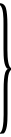

Üç Örnek Öykü ve Bir Önsöz! Bu kitabın kapağına Dört Örnek Öykü de yazabilirdim. Dört! Niçin? Çünkü bu Önsöz de bir öyküdür. Bir öykü, bunda anlaşalım ve bir nivola değil, bir öykü.
Bu nivola sözcüğünü ilk kez uzun bir öyküm için –Ne öykü ama!–, Sis için kullanmıştım, orada açıkladım, eleştirmenlerim için bulduğum bir çıkış yolu oldu benim… –eleştirmenlerim mi? Hadi öyle diyelim, eleştirmenlerim… Ve onlar bundan yararlanmayı bildiler, çünkü bu onların zihinsel tembelliklerinin yardımına koşuyordu. Zihinsel tembellik eskilere uymayanı değerlendirmeyi bilmemektir, kendilerini eleştirmenliğe verenlerin en tipik özelliğidir.
Burada, bu Önsöz’de de –öykü ya da nivola– nivolacılık konusuna bir kez daha dönmek zorundayız. Böylece piskoposluk biçemindeki birinci çoğul kişiye dönmemiz gerekiyor, çünkü ey okur, senin ve benim, yani bizim bu terimler üzerine yeniden dönmemiz gerekecek. Öyleyse şimdi örnekler sorununa dönelim.
Örnekler mi? Niçin?
Miguel de Cervantes Don Quijote’den sonra yayımladığı öykülere örnekler adını vermişti, çünkü bu öykülerin önsözünde bize söylediğine göre: “Yararlı bir örnek çıkarılamayan tek bir öykü yoktur.” Ve sonra ekliyor: “Amacım hemşerilerimizin onuruna, herkesin istekalara zarar vermeden, yani ruha da bedene de zarar vermeden eğlenebilmesi için bir bilardo masası yerleştirmekti, çünkü dürüst ve hoş jimnastik alıştırmaları zarar vermekten çok yarar sağlar.” Ve daha sonra: “Evet, her zaman mabetlere gidilmez, vaaz meclisleri her zaman dolu değildir, ne denli önemli olsa da her zaman iş yapılmaz; acılı ruhun dinlenebildiği dinlence saatleri vardır; bunun için ağaçlıklı yollar yapılır, kaynaklar aranır, yamaçlar düzleştirilir ve bahçeler özenle ağaçlandırılır.” Yine ekliyor: “Sana bir şey söylemek yürekliliğini göstereceğim: Eğer bir biçimde bu öykülerden çıkarılacak ders, bunları okuyana kötü bir istek ya da düşünce aşılayacak olsaydı, onları halkın önüne çıkarmaktansa, önce onları yazdığım elimi keserdim; elli beş yaşında olduğuma göre artık öbür dünya ile alay edecek yaşta değilim, dokuz yıldan fazla bir zamandır yaşamımı elimle kazanıyorum.”
Bundan şu çıkarılır: Birincisi Cervantes, öykülerinde etikten çok, bugün estetik diyebileceğimiz örnek olmayı aradı, bu öykülerle acılı ruha dinlence saatleri sağlamaya çalıştı, ikincisi ise bu öykülere örnek öyküler adını verişi onları yazdıktan sonra gerçekleşti. Tıpkı bende olduğu gibi.
Nasıl ki dilbilgisi kural koymaya çalıştığı dilden sonra geliyorsa, etik kuram da açıklamaya çalıştığı erdem ya da erdemsizlik eylemlerinden sonra geliyorsa, bu Önsöz de başına geçtiği ve önsözü olduğu öykülerden sonra yazılmıştır. Ve bu Önsöz bir bakıma başka bir öyküdür; öykülerimin öyküsüdür. Aynı zamanda da öykücülüğümle ilgili açıklamadır. Ya da isterseniz nivolacılık deyin.
Bu öykülere örnek öyküler diyorum, çünkü –dediğim gibi– örnek olarak veriyorum, yaşamdan örnek, gerçeklikten örnek.
Gerçeklikten! Evet, gerçeklikten!
Acı çekenler, yani savaşanlar –ya da isterseniz kişiler diyelim– gerçektirler, çok gerçektirler ve okurların kendilerine verdikleriyle değil, doğrudan doğruya kendilerinin namusluca var olmak ya da namusluca var olmamak konusundaki tüm içtenlikleriyle gerçektirler.
Yazın sanatında gerçekçilik denilen şeyden daha anlaşılmazı yoktur. Çünkü bu gerçekçiliğin gerçekliği hangisidir?
Doğru olan şu ki gerçekçilik denilen, tümüyle dışta olan, görünürde olan, kabuksal ve öyküsel olan şey, yazınsal sanatla ilgilidir, şiirsel ya da yaratıcı sanatla ilgili değil. Bir şiirde –ve en iyi öyküler şiirlerdir–, bir yaratıda gerçeklik eleştirmenlerin gerçekçilik dedikleriyle ilgili değildir. Bir yaratıda gerçeklik, içten, yaratıcı, istençli bir gerçekliktir. Bir ozan yaratıklarını –canlı yaratıklarını– gerçekçilik denilen yollarla yaratmaz. Gerçekçilerin kişileri genellikle iple oynatılan ve göğüslerinde Maese Pedro’nun sokaklardan, alanlardan, kahvelerden toplayıp defterine not ettiği tümceleri yineleyen bir gramofonla dolaşan giyinik mankenlerdir.
Bir insanın içten gerçekliği, gerçek gerçekliği, sonsuz gerçekliği, şiirsel ya da yaratıcı gerçekliği hangisidir? Bir insan ister etten kemikten olsun, isterse kurgu dediğimiz türden olsun aynıdır. Çünkü Don Quijote Cervantes kadar gerçektir; Hamlet ya da Macbeth Shakespeare kadar gerçektir, benim Augusto Pérez’im de bana o sözleri söylemekte haklıydı belki, –romanım (ama ne roman ya! Sis’e bakın, s. 199-200)– benim öyküm dahil, sizin öykünüzün ve başkalarının öykülerinin dünyaya gelmeleri için bir bahaneden başka bir şey değildim.
Bir insanın en içten, en yaratıcı, en gerçek parçası nedir?
Burada Oliver Wendell Holmes’un The Autocrat of the Breakfeast Table, III’de ortaya koyduğu üç Juan ve üç Tomás ile ilgili o kurama, bir kez daha başvurmam gerekiyor. İki Juan ve iki Tomás konuştukları zaman bize altı kişinin konuştuğunu söylüyor, şöyle ki:
| Üç Juan: |  |
1. Gerçek Juan: Yalnızca Yaradanı için tanınan. 2. Juan’ın ideal Juan’ı: Hiçbir zaman gerçek olmayan ve genellikle ondan çok farklı olan. 3. Tomas’ın ideal Juan’ı: Hiçbir zaman ne gerçek Juan’ın ne de Juan’ın ideal Juan’ı olmayan, genellikle her ikisinden de çok farklı olan. |
| Üç Tomás: |
1. Gerçek Tomás 2. Tomas’ın gerçek Tomás’ı 3. Juan’ın ideal Tomás’ı. |
Yani olmayan, olduğunu sandığı ve başkasının sandığı. Ve Oliver Wendell Holmes, onların her birisinin değeri üzerine fikir yürütüyor.
Ama bir aydın Yankee olan Oliver Holmes’tan başka bir yol seçmek zorundayım. Diyorum ki, bizde her birimizin Tanrı için olandan başka –hepimizin Tanrı için olduğumuzu kabul ederek– başkaları için olandan ve olduğu sanılandan başka, o olmak isteyen vardır. Bu sonuncusu herkesin olmak istediği “onun derinliklerindedir, gerçekte, gerçek olan yaratıcının içindedir. Göğsündedir. Olduğumuz o sayesinde değil de, olmak istediğimiz o sayesinde kurtulacağız ya da yitip gideceğiz. Tanrı bir kişiyi sonsuza dek olmak istediği kimse olmak zorunda bırakarak ödüllendirecek ya da cezalandıracaktır.
O halde tıpkı etten kemikten oluşmuş gerçek insanlardaki gibi, anlatı veya öyküsel ya da möyküsel kurgudan oluşmuş insanlarda da var olmak isteyenler ve var olmak istemeyenler vardır. Ve var olmamayı isteyen mistençli kahramanlar vardır.
Ama daha ileri gitmeden, var olmayı istememekle var olmamayı istemenin aynı şey olmadığını açıklamak istiyorum.
Gerçekten de ikisi olumlu olan dört durum vardır: a) var olmayı istemek; b) var olmamayı istemek… İki de olumsuz: c) var olmayı istememek; d) var olmamayı istememek. Tıpkı Tanrının olduğuna inanmak, Tanrının olmadığına inanmak, Tanrının olduğuna inanmamak ve Tanrının olmadığına inanmamak gibi. Olmak istemeyenden şiirsel bir yaratı ya da roman güçlükle çıkar; ama var olmamak isteyen birisinden, evet. Ve var olmamak isteyen kuşkusuz yoktur, bir intihar söz konusu.
Var olmamak isteyen, bunu var olarak ister.
N’oldu? Karışık mı geldi size? Bu size karışık geliyorsa ve yalnızca bunu anlamak açısından değil, ama bunu duyumsamak, hem de tutkuyla ve trajik olarak duyumsamak açısından yetenekli değilseniz, hiçbir zaman ne gerçek yaratıklar yaratmayı başaracaksınız, ne de herhangi bir romandan ya da kendi yaşamınızdan keyif alabileceksiniz. Bilindiği gibi, bir sanat yapıtından keyif alan onu kendinde yarattığı içindir, onu yeniden yarattığı ve onunla yeniden yaratıldığı içindir. Bunun için Cervantes Örnek Öyküler’in önsözünde “dinlence saatlerinden” söz ediyor. Ben de –kendimde kendimi yeniden yaratarak–, onun Licenciado Vidriera’sı ile kendimi yarattım. Ve Licenciado Vidriera bizzat bendim.
Anlaştık, şu halde –diyorum– bunda anlaştığımızı sanıyorum… en gerçek insan realist, en res, en nesne olandır, yani en sorumlu adamın –çalıştığı kadar vardır– var olmak isteyenin ya da var olmamak isteyenin yaratıcı olduğunu gösterdik. Kant gibi, kendiliğinden diyebileceğimiz bu insan, bu istençli ve ideal insan –düşünce, istenç ya da güçten oluşmuş insan– fenomenal, dış görünüşlü ve rasyonel bir dünyada, gerçekçi denilenlerin dünyasında yaşamak zorundadır. Ve yaşamın düş olduğunu düşlemelidir. Bu insanların birbirleriyle çarpışmasından trajedi, komedi, roman ve nivola ortaya çıkmaktadır. Ama gerçeklik içten olandır. Ne perde süsleri, ne dekorlar, ne giysiler, ne doğa görüntüleri, ne mobilyalar, ne öykülemeler, ne şu ne bu… gerçekliği oluşturur.
Yaşamın iki düşçüsü olan Segismundo ile Don Quijote’yi karşılaştırınız. Don Quijote’nin yaşamında yel değirmenleri değil, devler gerçeklik oldu. Değirmenler fenomenik, görüntüseldiler, devlerse kendilikli ve maddesel. Düş, yaşam, gerçeklik ve yaratı olandır. Saint Paul’e göre inanç da değil, umut eden nesnelerin özüdür ve umut edilen düştür. İman gerçekliğin kaynağıdır, çünkü yaşamdır. İnanmak yaratmaktır.
Ya da Odysseia, bir roman, bir gerçek roman, çok gerçek olan bu destan bir gerçekçinin sanatından çıkaracağı düşün olağanüstülüklerini anlatırken daha az mı gerçektir?
Evet, nivola konusuna takılmış olan eleştirmenlerin nakaratını biliyorum; tezli romanlar, felsefi romanlar, simgeler, kişileşmiş kavramlar, diyalog biçiminde denemeler… ve buna benzer şeyler.
Pekâlâ, bir insan, var olmak isteyen ya da var olmamak isteyen gerçek bir insan bir simgedir, bir simge de bir insan olabilir. Ve hatta bir kavram. Bir kavram, kişi olabilir. Ben hiperbolün bir kolunun asimptotuna dokunmak isteyeceğini –hem de öyle ister ki!– ama başaramayacağını sanıyorum ve hiperbolün asimptotu ile umutsuzca birleşme isteğini duyumsayan geometri bize bu hiperbolü bir kişi, trajik bir kişi gibi yaratacaktır. Ve elipsin iki merkezi olmasını istediğini sanıyorum. Ve trajediye ya da Newton’un binom öyküsüne inanıyorum. Bilmediğim şey, Newton’un bunu duyumsayıp duyumsamadığıdır.
Eleştirmenler ne olursa olsun yalın kavramlar ya da düzmece varlıklar diyorlar!
Emin ol ey okur, eğer Gustave Flaubert, söylediği gibi yazarken, yani romanında, gerçekçi romana örnek gösterilen romanında Emma Bovary’yi yaratırken, zehirlenme belirtileri duyumsadıysa ve Augusto Pérez’im önümde –daha doğrusu içimde– “yaşamak istiyorum Don Miguel, yaşamak istiyorum, yaşamak istiyorum…” diye inlerken ben de öldüğümü duyumsuyordum (Niebla) – Sis, s.204.
“Augusto Pérez sensin ha!” denecek bana. Ama hayır! Gerçek olan şu ki, bütün roman kişilerimi, yarattığım bütün kahramanları –koca bir ahali– ruhumdan, içten gerçekliğimden çıkarmış olmamdır, bizzat ben olmaları başka bir şeydir. Çünkü bizzat ben kimim? Miguel de Unamuno imzasını atan kimdir? Sahi… kişilerimden birisi, yaratıklarımdan birisi, acı çeken kahramanlarımdan birisiyim. Ve bu, sonuncu ve en içten olan ben, çok üstün olan, olağanüstü ben –ya da kendiliğinden var olan– kimdir? Tanrı bilir… Belki de bizzat Tanrı…
Ve şimdi, ne var olmak isteyen ne de var olmamak isteyen bu alacakaranlık kişilerinin –öğle vakti, gece yarısı kişileri değil– kendilerinin alınıp götürülmelerine izin verdiklerini söylüyorum size ve de çağdaş İspanyol romanlarımızı dolduran bütün bu kişilerden çoğunun kendilerini farklı yapan saçları ve belirtileriyle, sözcükleriyle, tikleri ve hareketleriyle kişiler olmadıklarını, içten gerçeklikleri olmadığını söylüyorum size. İçlerini boşalttıkları, ruhlarını çırılçıplak soydukları bir an yoktur.
Bir gerçek adam, bir anda, bir tümceyle bir çığlıkla keşfedilir. Shakespeare’de olduğu gibi. Onu keşfedip yarattıktan sonra, büyük bir olasılıkla onun kendisini tanıdığından daha iyi tanıyacaksınız onu.
Ey okur, eğer sanat için kişiler, trajik, komik kahramanlar ya da roman özelliğinde kişiler yaratmak istiyorsan ayrıntılara girme, seninle birlikte yaşayanların dış görünüşlerini gözlemlemeye çalışma, yapabilirsen onları işle, coşkulandır, özellikle onları sev ve bekle ki bir gün –belki hiçbir zaman olmayacak– var olmak isteyenler ruhlarının ruhunu bir çığlıkta, bir eylemde, bir tümcede aydınlığa çıkarırlar ve çırılçıplak soyarlar, işte o zaman o anı yakala, içine sok ve bırak, gerçeklik bir tohum gibi kişiliğinde, gerçekten gerçeklik olanda filizlensin. Belki de sen dostun Juan’dan ya da Juan olmak isteyen dostun Tomás’tan ya da Tomás olmak isteyenden ya da var olmamak isteyen onların her birisinden sen daha iyi bileceksin
Balzac ne vur patlasın çal oynasın yaşam süren bir insandı ne de başkalarında gördüklerini ya da onlardan duyduklarını not ederek zaman öldürüyordu. Dünyayı kendi içinde taşıyordu.
Ve her insan, içinde temel yedi erdemi ve karşıtı yedi erdemsizliği taşır: Kendini beğenmiştir ve alçakgönüllüdür, obur ve kanaatkârdır, kösnül ve edeplidir, kıskanç ve iyilikseverdir, cimri ve eli açıktır, tembel ve çalışkandır, öfkeli ve acı çekendir. Ve kendisinden diktatör de köle de, katil de aziz de, Kabil de Habil de yaratır.
Don Quijote ile Sancho’nun birbirlerine karşıt olmadıkları için aynı kaynaktan çıktıklarını söylemiyorum, Don Quijote’nin Yaşamı ve Sancho (Vida de Don Quijote y Sancho) adlı yapıtımda denediğimi sandığım gibi, Don Quijote Sanchopanza’cıydı, Sancho ise Donquijote’ci. Bu arada yapıtımdaki Don Quijote ile Sancho’nun, Cervantes’in Don Quijote’si ve Sancho’su olmadıklarını söyleyenler çıkacaktır. Çok doğru. Çünkü Don Quijote de Sancho da ne Cervantes’inkilerdir, ne de benimkilerdir, onlar kendilerini yaratanlara, yeniden yaratanlara aittirler –ya da daha doğrusu bizzat kendilerinindirler ve bizler onları yarattığımız ve yeniden yarattığımız zaman onlara aitiz.
Benim Don Quijote’min Cervantes’inkinden başka biri olup olmadığını bilmiyorum ya da aynısıysa bile, ilk olarak bize açtığı, Cervantes’in keşfedemediği ruhundaki derinlikleri keşfettim. Çünkü başka şeyler arasında, Cervantes’in şövalyenin yaşam düşünde Aldonza Lorenzo’nun duyumsadığı bu utangaç ve sessiz aşkın ne anlama geldiği konusundaki her şeyi değerlendirmediğinden eminim. Cervantes, Sancho Panza’nın Donquijoteciliğine ağırlık vermedi.
Kısacası: Her insan, içinde temel yedi erdemi ve karşıtı yedi erdemsizliği taşır ve onlardan her türde roman kahramanı yaratabilir.
Trajediden korkan zavallı kişiler, bir şeyin ayrımında olmamak ya da zaman öldürmek için –sonsuzluğu öldürmek zorundalar– okuyan bu insan gölgeleri, ya bir trajedide, ya bir komedide, ya bir romanda ya da isterseniz bir nivolada diyelim, bir erkekle, yalnızca tam bir erkekle, bir kadınla, yalnızca tam bir kadınla karşılaştıklarında kendi kendilerine sorarlar: “Ama bu yazar da nereden çıkarmış bunu!” Buna yalnızca tek bir yanıt uyar, o da “Senden değil mi?”dir. Bu yanıtı ondan, sıradan bir adamdan, karanlık bir adamdan çıkarmadığına göre, onu ona tanıtmak yararsızdır, çünkü onu insan olarak tanımıyor. Ve ona simge ya da alegori diyebiliyor.
Bu sıradan ve görünüşte kişi, trajediden kaçan bu kişi, Pindora’nın nitelediği adam gibi, bir gölgenin düşü bile değildir. Olsa olsa bir düşün gölgesi olur diyor Tasso. Çünkü bir gölgenin düşü olan ve bu olmanın bilincinde olan, onunla birlikte acı çeken ve o olmak isteyen ya da o olmamak isteyen kişi, trajik bir kişi olacaktır ve bizzat kendisinde trajik –ya da komik– kişiler yaratabilecek yeteneği, romancı olabilme yeteneği olacaktır, bu budur: Ozandır ve bir romandan, yani bir şiirden keyif alabilecek yeteneği vardır.
Anlaşıldı mı?
Yaratılarımıza açıklık getirmek için savaşmak bir başka trajedidir.
Bu Önsöz de bir öyküdür. Ey okur, Savaşta Barış ile Aşk ve Pedagoji’den (Paz en la guerra y Amor y Pedagogía) başlayarak bütün romanlarımın ve –roman olan– bütün öykülerimin, Sis (Niebla) ve –belki de en trajik olan– Abel Sánchez’den başlayarak, biraz sonra okuyacağın Üç Örnek Öykü’ye (Tres Novelas ejemplares) dek bütün romanlarımın öyküsüdür bu Önsöz.
Bu öykülere niçin örnek öyküler dediğimi görüyor musun, ey okur? Umarım örnek olurlar!
Bugün İspanya’da romanı genellikle kadınların tükettiklerini biliyorum. Yani kadınlar değil de, hanımlar ve genç kızlar. Hanımlar ve genç kızlar genellikle itirafta bulundukları rahiplerin kendilerine verdikleri ya da okumayı yasakladıkları bu romanları okumaya pek heveslidirler ya da bataklıktan damıtılanların veya irin fışkırtan pornografik romanların yalancı duygululuklarına kendilerini bırakırlar. Onların düşünmelerini sağlayan şeylerden kaçtıkları anlamına gelmez bu, onları eyleme geçiren şeylerden kaçarlar. Sonu bilmem nereye varan bir sarsıntı ile değil. Pekâlâ, susmak daha doğru olur!
Bu hanımlar ve genç kızlar bir mankende sunulan giysiyle, bu giysi modaysa veya manken giysisizse ya da yarı çıplaksa, kendilerinden geçerler; ama özgür ve soylu çıplak onları tiksindirir. Özellikle ruhun tüm çıplaklığı.
Ve işte bu yolda ilerler bizim romanesk yazınımız!
Yazın… evet, yazın. Yazından başka şey değil. Bu, arz ve talep yasasına, dışalıma, dışsatıma ve gümrük denetimine ve harca bağlı bir var olma türüdür.
Ve sonunda ey erkek okurlar, kadın okurlar, beyler, hanımlar, genç kızlar, bu üç öykünün, kişileri içlerine kapanık ve tanınmadan yaşamak zorunda kalsalar bile, yaşayacaklarını biliyorum. Kendi yaşayacağımdan emin olduğum kadar bundan eminim.
Nasıl? Ne zaman? Nerede? Bunu yalnızca Tanrı bilir…